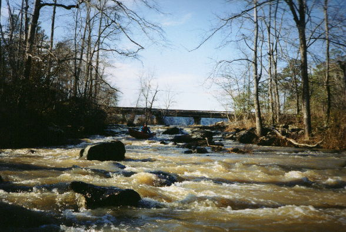
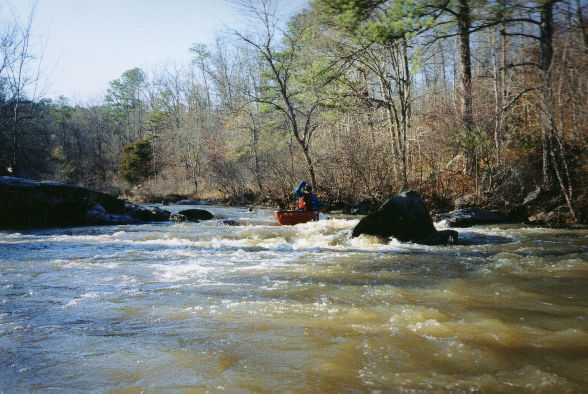
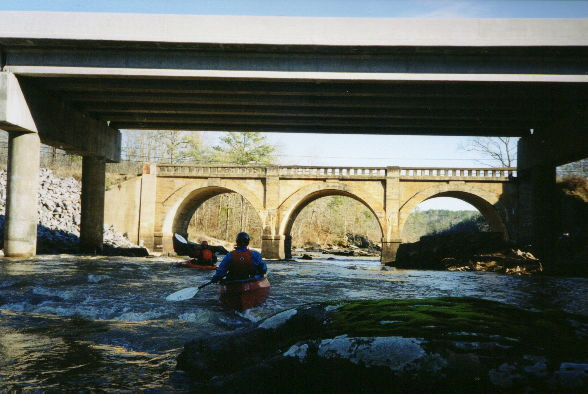
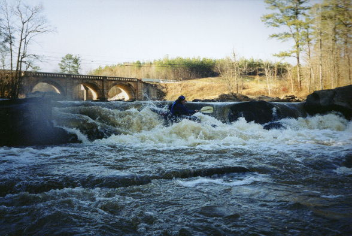

|  | The put-in rapid. Low water. Watch for deer carcasses. |
|  | Dave Curry deftly avoids a rock in brutal class I/II. |
|  | The last rapid from above, a nice wave is just above the arch bridge. |
|  | The last drop in the last rapid. This is under the lake at summer pool. |